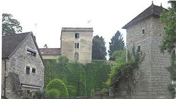
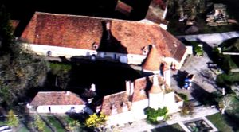
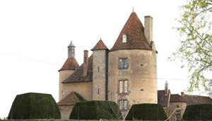
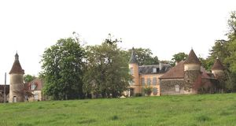
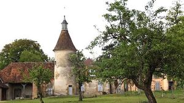
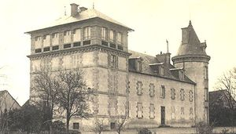
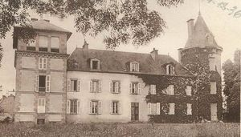
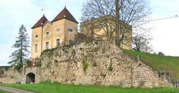

Recensement Jean-Claude Truffet
| Département | 03 — Allier |
| Canton | Souvigny |
| Commune | Chemilly |
| Type d'édifice | Château |
| Période d'origine | XV-XVII |








Plusieurs châteaux à Chemilly dont celui de Chemilly du XVIIe siècle avec tour, de Ramillons du XV-XIXe siècle avec grosse tour ronde, de Previa du XIXe siècle avec tour, de Soupaize classique, les Foucauds. CHEMILLY, le château faisait partie du système défensif longeant la vallée supérieure de la Saône dès le Moyen-Age. Le château a été très remanié depuis le XIIIe siècle. SOUPAIZE a été le siège d'une paroisse et probablement d'une seigneurie, car en 1100, dans un acte de restitution de biens ecclésiastiques, apparait un Gilbert Soupezio. Le seigneur du lieu a obtenu, l'autorisation de fortifier sa demeure en 1475. L'écuyer Jehan du Boys, en 1503 reconnaît tenir en fief de la duchesse de Bourbon.en 1614, Pierre Bardon et Marie Girard, sa femme. En 1619 Pierre Bardon possédait également la seigneurie du Méage. Son fils, Jean, qualifié d'écuyer, était conseiller au présidial de Moulins. Philippe Bardon était sieur de Bellesme et des Moquets. Le FOUCAUDS, en 1560, le "château et seigneurie des Foucaults" appartenaient au capitaine de Montcoquier, famille originaire de Monétay, qui en resta très longtemps propriétaire. en 1602, le sieur de Montcoquier, Renaud, chevalier, mourut à Bourbon Lancy. La seigneurie fut confiée à des fermiers. La famille de la Souche, après avoir vendu sa seigneurie de Saint-Augustin aux Cadier, s'installa aux Foucauds en 1733, monsieur l'abbé de la Souche de St-Augustin maria messire Gilbert de la Souche, seigneur des Foucaux, mousquetaire du Roi, à mademoiselle d'Albon, à Paris, en la paroisse de St-Paul. Lors du mariage, à Chemilly, de sa fille avec un comte, le 24 septembre 1748, il se prévalait du titre de seigneur-marquis d'Abrest.
Chemilly, aux Moquets on peut voir une gentilhommière en forme de U avec une tour ronde en façade du corps central, daté du XVIIe siècle. Les communs sont complétés d'un pigeonnier circulaire, surmonté d'un campanile. Foucauds est doté de deux tours, une grosse tour ronde et une seconde à canonnières en façade qui date du XIVe siècle, le reste est du XVIIe siècle; importants communs. Previa, château construction du début du XIXe siècle, dans le style classique. Un grand corps de bâtiment à rez-de-chaussée sur terrasse et niveau de comble, reçoit aux angles deux pavillons carrés en retour d'équerre, à toits à
quatre pans. Des lucarnes éclairent les combles et celles des pavillons sont surmontées d'un linteau triangulaire. Du côté du val d'Allier, la terrasse est bordée d'une longue rampe à balustres. La façade principale, flanquée d'une tour centrale, s'ouvre sur un joli parc arboré. Ramillons, il reste de l'ancienne seigneurie une grosse tour ronde, de la fin du Moyen-Age. Les bâtiments actuels logis et communs, sont de forme rectangulaire, relativement peu élevés. A l'un d'eux est adossée une chapelle seigneuriale. Un pavillon rectangulaire à quatre niveaux est adossé à l'un des pignons. Il se termine par un étage en forme d'oriol, largement ouvert sur l'extérieur. Soupaize, les bâtiments sont encore importants et distribués autour d'une cour fermée par des murs, des grilles et un portail tenu par des piliers de pierre. Le logis quadrangulaire est accosté d'une tour ronde à clocheton et une tour carrée en façade. Un joli porche à toit impérial est intégré dans les communs.
Fief de Gilbert Soupezio Capitaine de Montcoquier"
Château des Foucauds, de Previa, de Ramillons et de Soupaize à Chemilly.